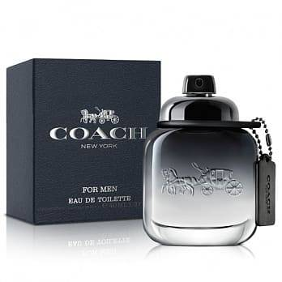

創立於1941年的Coach，曾以其精緻的手工皮藝，創造出一系列高質感的皮件飾品。
他們從傳統的棒球手套中獲得靈感，運用了獨特細膩的技術，將堅固的球套皮革變成柔軟充滿光澤的皮件飾品。
到了90年代，COACH遇到了發展瓶頸，直到1995年Lew Frankfort就任CEO之後，
新的設計師Reed Krakoff為COACH提出了新產品理念－3F，Fan(快樂)、Feminine(女人味)、Fashionable(時尚)，COACH品牌才重新恢復了新的氣象。
COACH創造出時尚而色彩豐富的包包和飾品，造成全球銷售狂潮後，更帶領COACH再攀時尚舞台高峰。

連到首頁
連到第3頁
連到第4頁